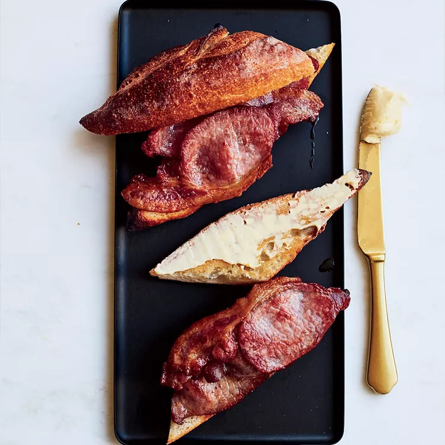

Breakfast

Quick Bacon-and-Butter Sandwiches recipe for you
Ingredients
- 8 slices of back bacon
- 4 tablespoons unsalted butter, softened
- 2 teaspoons dry sherry
- Four 4-inch-long baguette pieces, split and lightly toasted
Steps
In a large cast-iron skillet, cook half of the bacon over moderately high heat, turning once, until browned and the edges are crisp, 5 to 7 minutes.
Transfer to paper towels. Repeat with the remaining bacon.
In a small bowl, blend the butter with the sherry. Spread it on the baguette bottoms. Top each with 2 slices of bacon, close the sandwiches and serve.